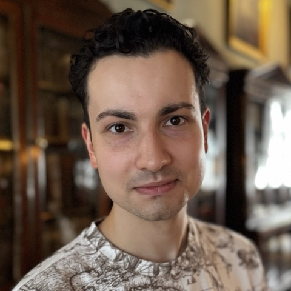

Thomas Szymanski
Statistics, ML, AI.
I am an MS student in Applied Statistics for Social Science Research at NYU Steinhardt, where I also serve as President of the Society for Statistics Students and helped launch its Portfolio Projects Initiative. My current work sits at the intersection of psychometrics, AI agentic systems, and social-science methodology.

Projects
Evaluated whether grade-level complexity of 2024–2025 New York State ELA reading passages is recoverable by LLMs and traditional readability metrics. Deployed Claude Opus 4.5 alongside six local models via Ollama and a Random Forest on Flesch-Kincaid, Dale-Chall, and CTTR features. All models showed systematic grade-level compression; instruction-tuned local models closely approximated Opus despite running on consumer hardware, and the Random Forest achieved the lowest RMSE.
Applied EFA, Rasch IRT, and Cognitive Diagnostic Models to ~540K Duolingo trial responses. Near-ceiling accuracy (~95%) limited latent class recovery; a pivot to response-time-based CDM yielded non-degenerate results. Verb tense/mood emerged as the most consistent driver of item difficulty across all three frameworks.
Analyzed Meta's Social Connectedness Index alongside DHS lawful permanent resident data (2013–2024). Four Central American countries exceeded global SCI averages by wide margins — Honduras at ~5× — and the SCI–immigration relationship was substantially stronger for Central America than the global baseline.
Experience
- Co-founded the Portfolio Projects Initiative, an independent, student-run research program that bridges classroom statistical theory and real-world problems by pairing A3SR Master's students with partner organizations.
- Projects span commercial analytics, social impact, data journalism, and public policy, from predictive modeling and nonprofit survey design to election modeling and civic data strategy; partners contribute project direction, datasets, tools, and mentorship.
- Collaborated on the student matching process, which pairs teams with partners by technical capability and industry interest; the research timeline, two cycles a year (October–January and February–June), each closing with a symposium presentation to the club and partners; and the public GitHub publishing model, under which students choose their own research questions and publish findings openly at no cost to partners.
- Interviewed student applicants for the inaugural research cycle.
- Applied Generalizability Theory to evaluate the performance and reliability of AI agentic systems under Prof. Klint Kanopka.
- Designed measurement frameworks to decompose variance in agentic AI outputs across conditions, tasks, and raters.
- Found, via G-theory modeling of GPT-5.4 Mini on GAIA level-one tasks under a crossed agentic hierarchy × reasoning design, that agentic hierarchy (HuggingFace smolagents) drove variance in the results.
- Deliver embedded math and literacy tutoring in a 5th-grade classroom; design small-group activities and original instructional materials.
- Conduct targeted interventions for English learner students, leveraging Spanish and Russian fluency to bridge language gaps.
- Analyze student assessment data to identify patterns of need and inform differentiated instruction.
- Began learning Mandarin Chinese to better serve the classroom's Chinese-speaking English learners.
- Researched Polish business activities and diplomatic events; organized findings into Excel reports and databases used by consular staff.
- Synthesized legal documents in Polish for consular proceedings.
- Supported Polish-language citizenship and documentation interviews, assisting diaspora applicants in Ukrainian and Russian.
Education
Honors
- Full merit scholarship to Macaulay Honors College (4 years)
- Mellon Public Humanities and Social Justice Program Participant
- Cooper Fellow — Dean's List at Hunter College
- Gilder Lehrman Institute Richard Gilder History Prize, 2020
Coursework
Applied Probability, Statistical Computing, Intermediate Quantitative Methods: General Linear Model, Data Science for Social Impact, Supervised & Unsupervised Machine Learning, Generalized Linear Models and Extensions, Frequentist Inference, Databases and Data Science, Generative AI for the Social Sciences, Modern Approaches in Measurement, Causal Inference, Messy Data and Machine Learning, Multi-Level Modeling, Statistical Practice and Proficiency
Linear Algebra, Abstract Algebra, Vector Analysis, Ordinary Differential Equations, Modern Mathematical Analysis I, Geometries I (graduate), Advanced Probability Theory I (graduate)